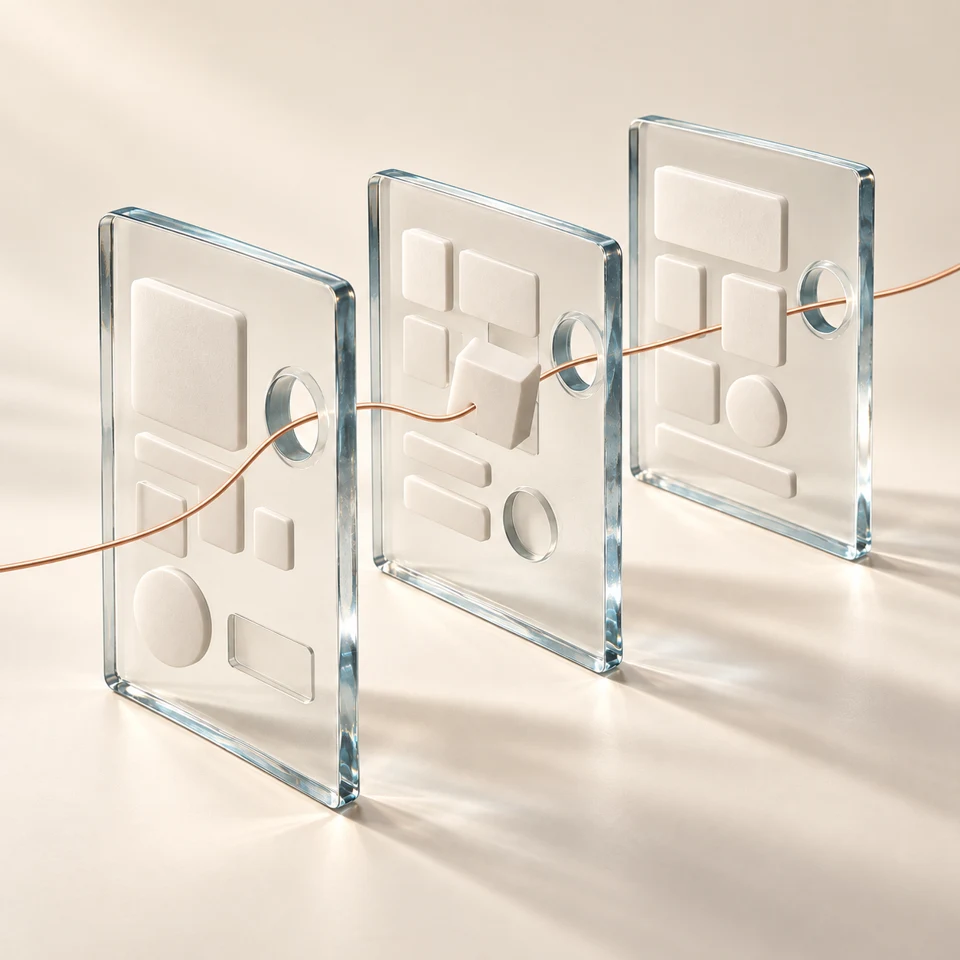
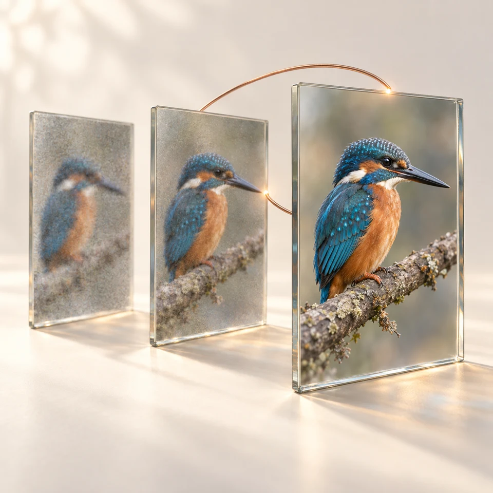
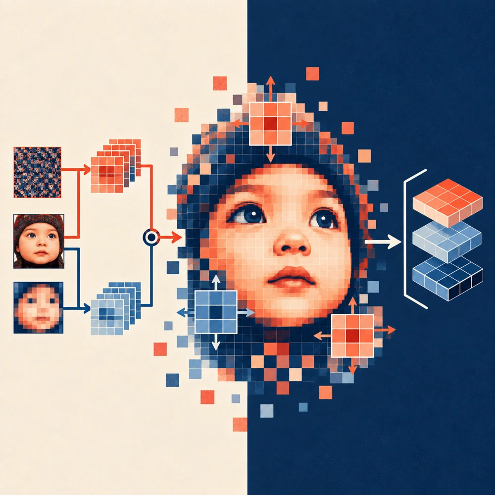
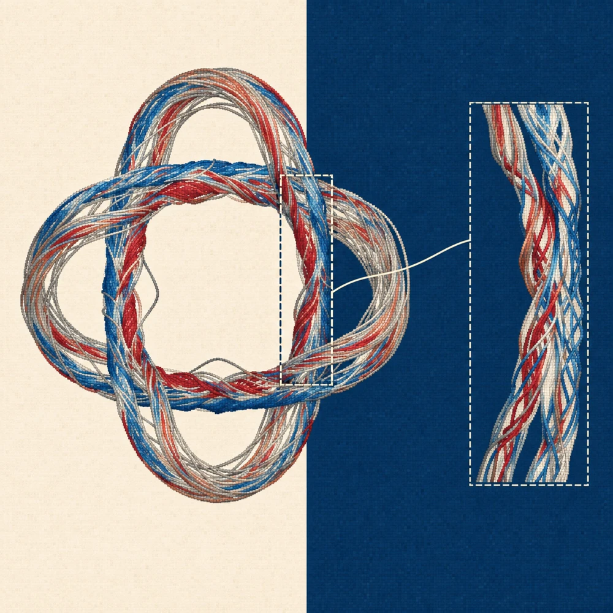
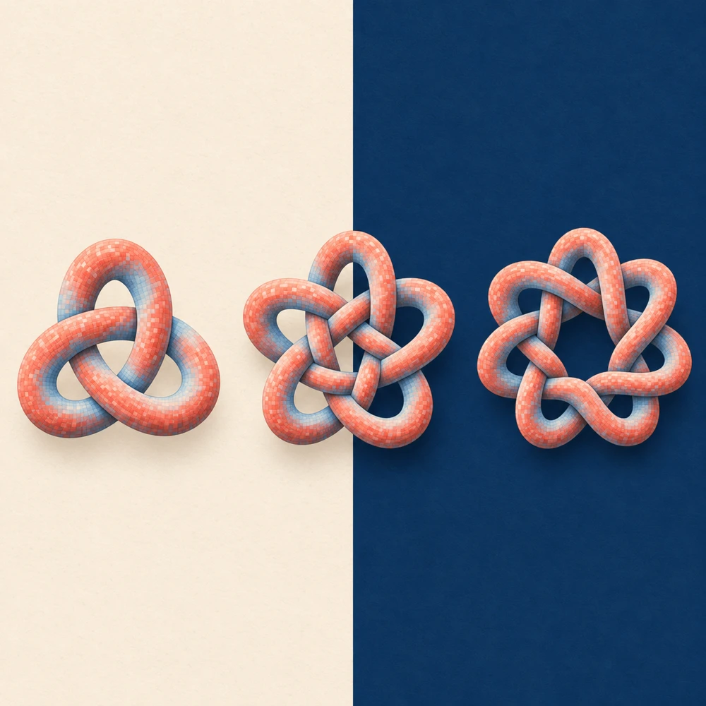
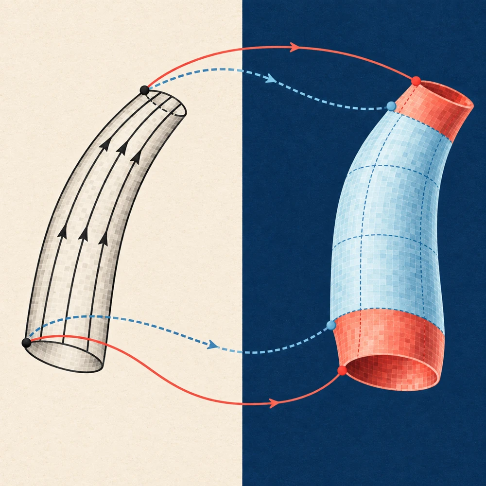

Research note
Research notes & technical reports
Research
Language models, generative vision, and fluid dynamics.
Methods, results, and limitations from the original research.
22 entries
Research articles
Illustrated research notesResearch note
MMG2Skill: revising agent procedures from execution

Research noteWebCompass: evaluating web applications in the browser
Research note
ASASR: frequency-aware preference learning for faithful super-resolution

Research noteResFlow-Tuner: searching flow trajectories for image restoration

Research noteShiftLUT: wider restoration context with compact lookup tables
Research note
InstantViR: distilling video restoration into a streaming solver
Research note
VARSR: coarse-to-fine super-resolution with a diffusion refiner

Research noteHow magnetic curvature generates vortex dipoles that split flux tubes

Research noteA magnetic knot cascade driven by successive flux-tube reconnections

Research noteTracking vortex surfaces with a virtual transport velocity
Research note
LPM: temporal anchors for long-video restoration
Reports & papers
Methods & evaluationsT-InvBlocks: separating luminance, color, and detail for image rescaling
A three-branch invertible block separates brightness, color, and fine detail to improve learned downscaling and reconstruction.
OAPT: offset-aware attention for double JPEG restoration
OAPT uses the offset between successive JPEG compressions to decide which image regions should attend to one another.
CPGA: reusing codec motion and residuals for video enhancement
CPGA uses motion vectors, predictions, and residuals already produced by a video codec to recover detail after compression.
XPSR: scene and degradation prompts for diffusion super-resolution
XPSR gives a diffusion restorer two kinds of language guidance: a description of the scene and a diagnosis of its degradation.
PTM-VQA: aligning frozen visual features for video quality prediction
PTM-VQA combines frozen visual models and learns a small shared representation for predicting how people rate a video.
CasSR: generated visual references for diffusion super-resolution
CasSR first builds a cleaner reference image, then lets a diffusion model consult both that reference and the original observation.
Vortex bursting in twisted magnetic flux tubes with opposite chiralities
The original manuscript is needed before a research analysis can be published.
Manuscript unavailableKAT-Coder-V2.5-Dev: reward shaping for reliable tool use
The open-weight, 35B-parameter mixture-of-experts model adapts the V2.5 training recipe with penalties for excessive tool calls, failed calls, and repetition.
KAT-Coder-V2.5: verified environments and hindsight-assisted learning
KAT-Coder-V2.5 combines environment verification, trajectory recovery, and an asymmetric actor–critic objective to improve the feedback used to train coding agents.
KAT-Coder-V2: specialist training and on-policy expert fusion
KAT-Coder-V2 separates coding-agent skills during training, then distills them into a single model. Its results also show how much the surrounding agent software matters.
No matching papers
Try another title, author, or topic.